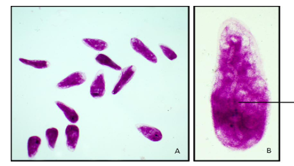

To cytochemically demonstrate the presence of mucopolysaccharides in the ciliates using Periodic Acid Schiff’s reaction (PAS reaction).
Carnoy's fixed ciliates on slides
All glassware and plastic ware used should be sterilized:
The Periodic Acid Schiff, or PAS reaction is a technique for the demonstration of presence of carbohydrates. McManus devised the technique based on selective oxidation of “1,2 glycol” group on monomer unit of all insoluble polysaccharides by Periodic Acid (HIO4) with liberation of aldehyde group which on reaction with Schiff’s reagent form a magenta coloured complex. Tissue polysaccharides do not contain free aldehyde groups, since the sugars in the polysaccharides are not in their aldose configuration. Periodic Acid is an oxidant, which breaks the C-C bond in various structures where they are present as 1, 2- glycol groups (CHOH-CHOH) converting them into dialdehyde.
Schiff’s reagent was introduced by Schiff for purely chemical purposes. Stain is prepared by taking basic fuchsin powder, which consists of a mixture of pararosanilin and rosanilin. Sulphurous acid formed from SO2 at low pH (acidic medium) reacts with pararosanilin and rosanilin to form a (nearly colourless) pale yellow reaction product called Schiff’s reagent, Fuchsin-sulphurous acid, Leucobasic fuchsin or Feulgen stain. It reacts with aldehyde groups in two steps forming the aldehyde-stain product. The binding of the stain is very strong and cannot be extracted either by alcohol or by prolonged washing under running tap water.
Animation of the experiment:--
Click here to perform the simulation
